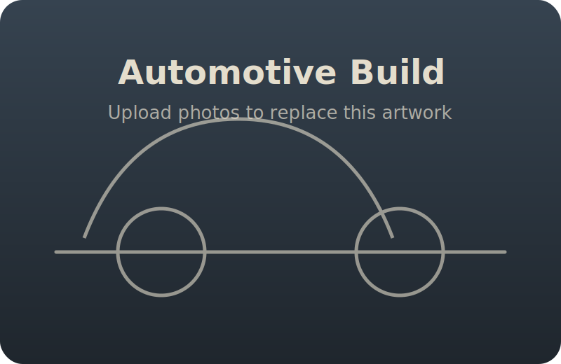

1968 Ford Bronco — 289 CID
Baseline restoration with period-correct power, refreshed drivetrain, and safety upgrades.
Selected Work
Browse a sampling of automotive restorations, CAD studies, and computer & electrical projects. Each entry links to a richer gallery or interactive viewer.
Engine swaps, chassis refurbishments, and tailored details. Image galleries open in a horizontal lightbox.
Baseline restoration with period-correct power, refreshed drivetrain, and safety upgrades.
Modernized restomod featuring a late-model Coyote swap, new wiring, and instrumentation.
Frame-off rebuild focused on off-road reliability, cooling, and clean packaging.
Street-tuned coupe with aero tweaks, suspension refresh, and track-ready instrumentation.
Interactive viewers let you orbit, zoom, and inspect detailed models. Upload GLB/GLTF assets to replace the placeholders.
Slot for a mechanical assembly or component with exploded view states.
Perfect for a fixture, jig, or tooling concept to show detail control.
Use this slot for a lightweight concept rendered straight from CAD.
Ideal for a surface-heavy design or ergonomic study.
Embedded builds, audio-reactive lighting, and smart home integrations. Galleries highlight wiring discipline and final behavior.

Classic timing IC driving alternating beacons with adjustable pulse widths.
Voice-enabled display with embedded LEDs, microphone array, and responsive UI.
FFT-driven light bar that maps audio frequencies to cascading color bands.